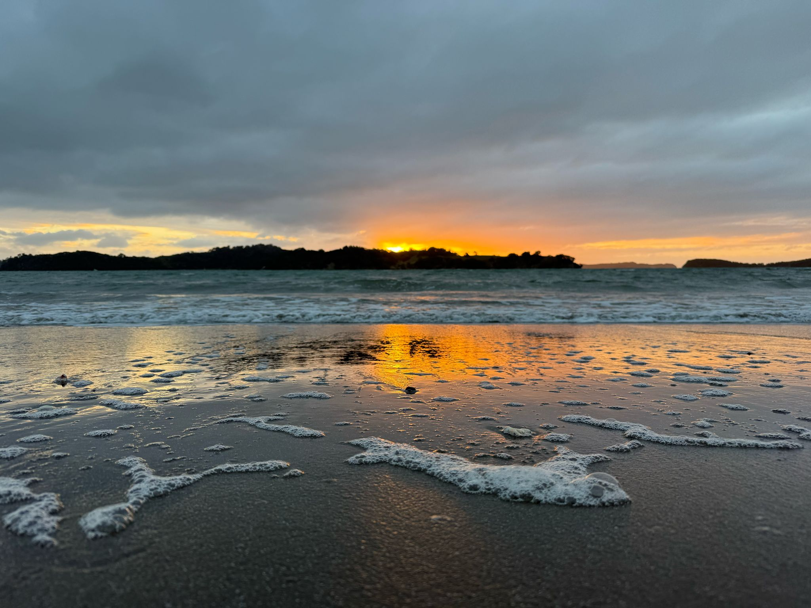
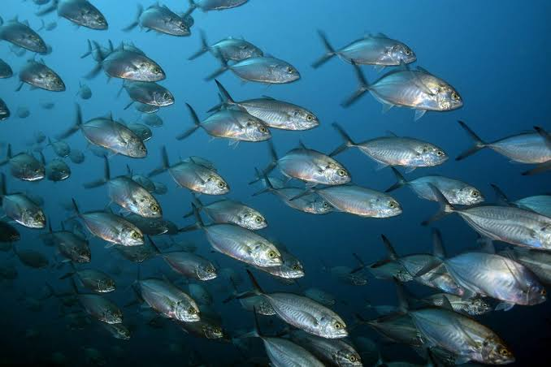
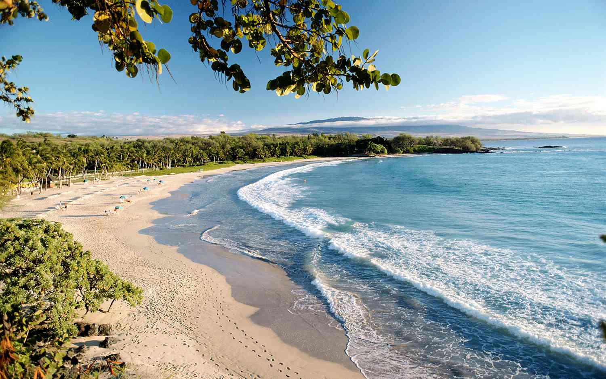

Our oceans are home to an incredible variety of marine life, from tiny plankton to magnificent whales. Unfortunately, plastic pollution, habitat destruction, and rising ocean temperatures threaten the survival of many marine species.
By reducing plastic waste, protecting marine habitats, and spreading awareness, we can help preserve biodiversity and maintain healthy ocean ecosystems.
Ocean pollution is a growing environmental issue that affects marine animals, coastal communities, and entire ecosystems. Plastic waste, chemical pollutants, and other harmful materials can damage habitats and threaten marine life.
We can all make a difference through simple actions, such as using reusable products, disposing of rubbish responsibly, and participating in beach clean-ups. Together, we can help create cleaner oceans and a healthier planet.

Protecting our oceans starts with us. Every action, no matter how small, can contribute to a healthier marine environment.
Learn about the threats facing our oceans, make sustainable choices, and encourage others to protect our planet.
Donate